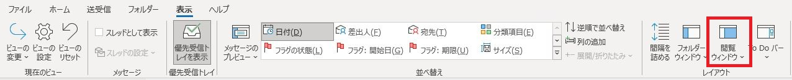
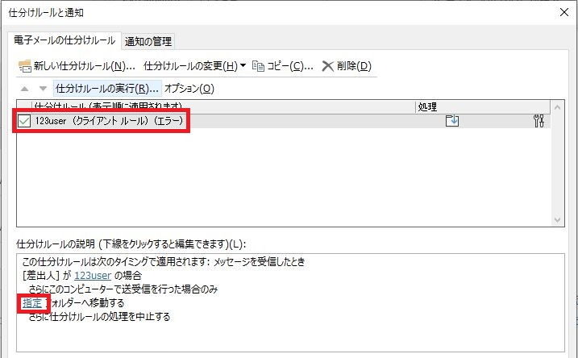
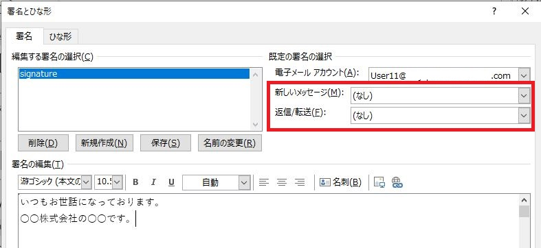
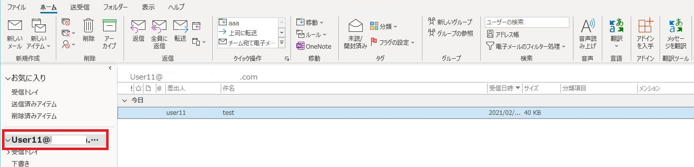

こんにちは。日本マイクロソフト Outlook サポート チームです。
今回は Exchange サーバーに接続している環境で Outlook のプロファイルを再作成した際、保持されず、再設定する必要がある情報についてご紹介します。
例えば、Exchange サーバーの接続先メールボックスは変更ないが、Outlook プロファイルの破損等なんらかの理由で Outlook プロファイルの再作成が必要な場合に、参考にしてください。
※ Exchange サーバーに POP または IMAP で接続している場合には、以下にリストした以外にも移行されない情報があります。
再設定が必要な項目
a. 閲覧ウィンドウの設定について
b. PST ファイルについて
c. 仕分けルールについて
d. 署名の設定について
e. 手動で追加した共有メールボックスについて
f. 共有の予定表にてチェック オンの予定表について
g. ビューの設定 (キャッシュ モード利用の場合)
h. ルートフォルダー上のアイテム (キャッシュ モード利用の場合)
a. 閲覧ウィンドウの設定について
閲覧ウィンドウの設定など、一部の表示設定は引き継がれないことがあるため、再設定が必要となります。
‐ 閲覧ウィンドウの設定手順
- Outlook を起動します。
- [表示] タブを選択します。
- [閲覧ウィンドウ] をクリックして設定を変更します。

b. PST ファイルについて
PST ファイルは Outlook プロファイルごとに設定が保持されるため、再設定が必要となります。
‐ PST ファイルの再設定手順
- Outlook を起動します。
- [ファイル] タブを選択します。
- [開く / エクスポート] をクリックして、[Outlook データ ファイルを開く] をクリックします。
- 対象のファイルを選択します。
参考情報:
その他の手順につきましては、以下をご参考にしてください。
Title: Outlook データ ファイルを開く、変更する、または閉じる
URL: https://support.microsoft.com/ja-jp/kb/2179226
Note: Outlook 2010 以降共通の手順です。
c. 仕分けルールについて
仕分けルールの設定は Exchange サーバーのメールボックスにも情報が格納されるため、クライアント ルールも含めて基本的にはそのまま動作します。
ただし、PST ファイルは再設定が必要となるため、PST ファイルへの移動するようなルールについては移動先フォルダーの再指定が必要となります。
‐ 仕分けルール再設定手順
- Outlook を起動します。
- [ファイル] タブを選択します。
- [仕分けルールと通知の管理] をクリックします。
- [電子メールの仕分けルール] タブでルールを設定します。

d. 署名の設定について
Outlook に設定した署名はプロファイル再作成後も引き継がれます。
ただし、メール作成時に署名を既定で挿入するように設定している場合、プロファイル再作成後、再設定が必要となります。
※署名のデーターはローカルディスクに保存されていますので、端末を変更した場合には、署名データーの移行も必要です。
‐ 署名再設定手順
- Outlook を起動します。
- [ファイル] タブを選択します。
- [オプション]-[メール]-[署名 (N)] をクリックします。
- [既定の署名の選択] を設定します。

e.共有メールボックスについて
共有メールボックスを手動で開くパターンとして以下になります。
いずれの場合もプロファイル再作成後には設定が引き継がれません。
なお、Exchange サーバー側で Automapping が有効になっている場合には、FullAccess 権を持つメール ボックスが自動で追加表示される動作となりますので、この場合には、手動での再設定は必要ありません。
パターン 1 : 共有のメール ボックスの受信トレイなどのフォルダーにアクセス権を付与し、そのフォルダーを開く
‐ 手順
- Outlook を起動します。
- [ファイル] タブを選択します。
- [開く/エクスポート] をクリックして、[他のユーザーのフォルダー] をクリックします。
- [ほかのユーザーのフォルダーを開く] 画面が表示されるため、該当のユーザーを指定し [OK] をクリックします。
パターン 2 : [アカウント設定]より追加のメールボックス設定を行う
‐ 手順
- Outlook を起動します。
- [ファイル] タブを選択します。
- [アカウント設定] をクリックして、[電子メール] タブ の Exchange アカウントをダブル クリックします。
- [詳細設定 (M)]をクリックし、「Microsoft Exchange」画面を表示します。
- [詳細設定] タブにて、[追加 (D)] をクリックし [メールボックスの追加] より、共有メールボックスを追加します。
f. 共有の予定表にチェックを入れている予定表について
[予定表を開く] より他人の予定表を設定し、共有の予定表のチェックをオンにしていた場合には、そのチェック オンの状態は引き継がれません。
‐ 手順
- Outlook を起動します。
- [予定表]を選択します。
- ナビゲーションペインから表示したい予定表にチェックをオンにします。
g. ビューの設定 (キャッシュ モード利用の場合のみ)
キャッシュ モードを利用する場合、ビューの設定はローカルの OST ファイルに保存されていますので、プロファイル再作成後に設定内容が引き継がれません。
また、ビューの設定についてはエクスポート / インポートの機能がないため、以前の Outlook プロファイルで設定していたビューの内容を事前にメモしてから、ビューの再設定が必要となります。
‐ 手順
- Outlook を起動します。
- [表示] タブを選択します。
- [ビューの設定] から以前の Outlook プロファイルで設定いただいた内容を設定します。
h. ルートフォルダー上のアイテム (キャッシュ モード利用の場合のみ)
キャッシュ モードではルートフォルダー上のアイテムもローカルの OST ファイルに保存されているため、プロファイル再作成後に引き継がれません。
ルートフォルダーとは、受信トレイのさらに上のメール アドレス (たとえば、aaa@example.com) が該当します。
通常、Outlook では、該当フォルダーをクリックすると Outlook Today が表示され、アイテムは保存できません。
ただし、ユーザーがルート フォルダー配下に何らかのアイテムを保存している場合、プロファイル再作成前に手動で別のフォルダーへの保存が必要です。

本情報の内容（添付文書、リンク先などを含む）は、作成日時点でのものであり、予告なく変更される場合があります。